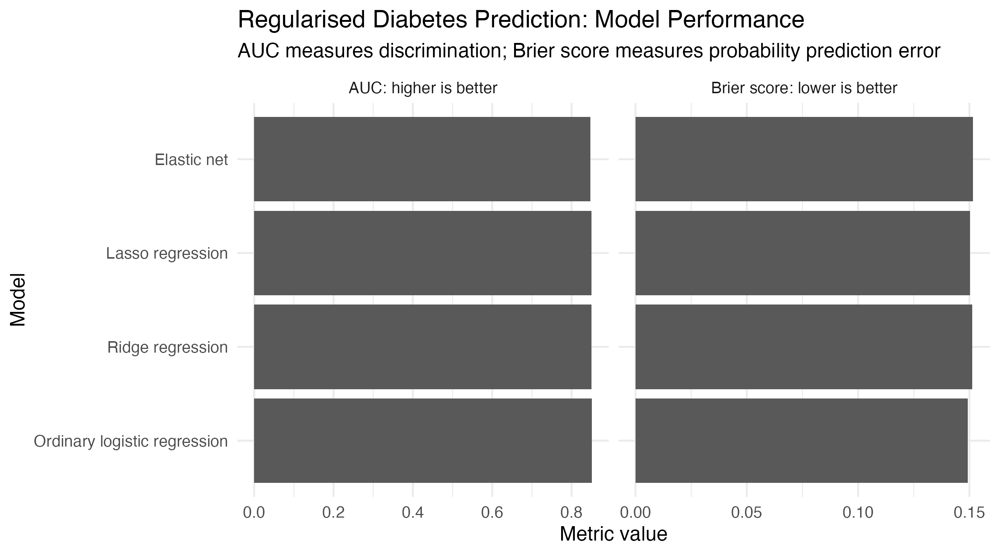
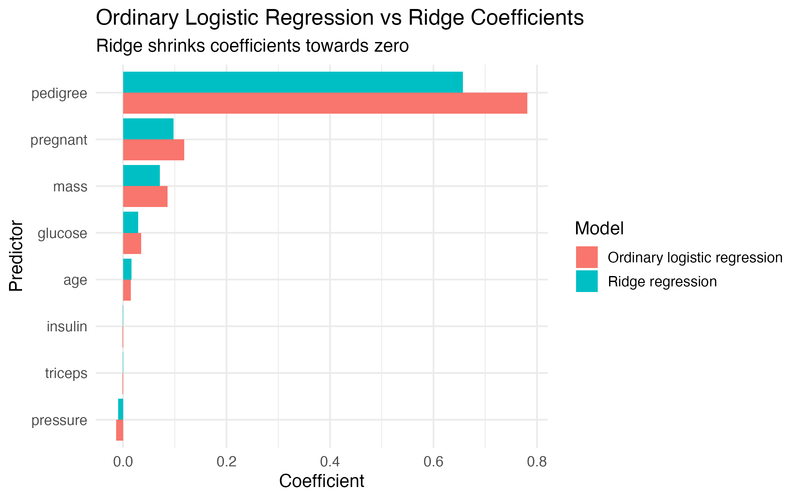
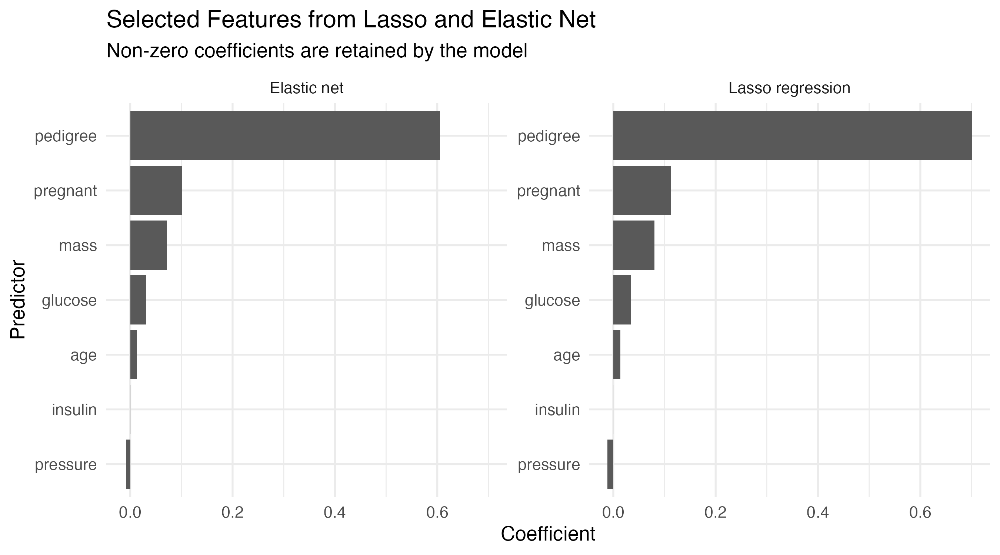
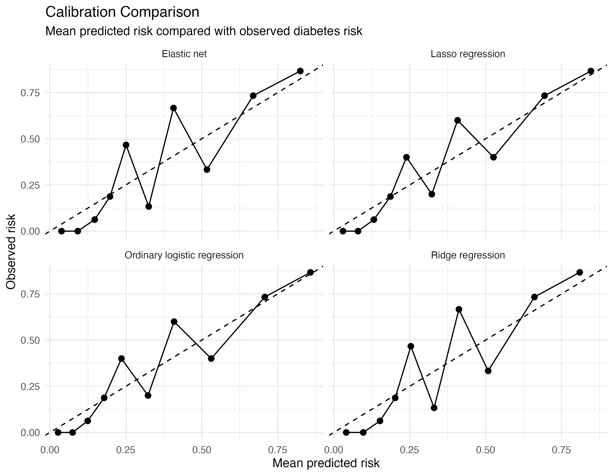

This case study extends the first diabetes risk prediction case study.
In Case Study 1, we used ordinary logistic regression to predict diabetes status from routinely measured clinical characteristics.
In this case study, we ask a new question:
Can regularised regression methods improve or stabilise diabetes risk prediction compared with ordinary logistic regression?
The aim is not simply to find the model with the highest AUC. The aim is to understand how regularisation changes the modelling process, how ridge, lasso, and elastic net behave differently, and how feature selection should be interpreted in a medical prediction setting.
In this case study, we focus on:
The clinical question is:
Can we predict whether a patient has diabetes using routinely measured clinical characteristics, and do regularised models provide a useful alternative to ordinary logistic regression?
This remains a binary clinical prediction problem.
The outcome has two categories:
Diabetes: yes/no
The model estimates the probability that a patient belongs to the diabetes-positive group based on clinical measurements.
This case study is for teaching only. It should not be interpreted as a deployable diabetes diagnosis or screening model.
Ordinary logistic regression is a strong baseline model for binary clinical prediction.
However, ordinary regression can become unstable when:
Regularised regression methods try to reduce this problem by shrinking coefficients.
This matters in medical prediction because a model should not only fit the development dataset. It should generalise to new patients.
This case study introduces three regularised approaches:
| Method | Main idea |
|---|---|
| Ridge regression | Shrinks coefficients but usually keeps all predictors |
| Lasso regression | Shrinks some coefficients exactly to zero |
| Elastic net | Combines ridge and lasso behaviour |
A very important lesson from this case study is that regularisation does not automatically improve performance. Sometimes ordinary logistic regression performs just as well, especially when the number of predictors is modest.
This case study uses the same Pima Indians Diabetes dataset used in Case Study 1.
The dataset is commonly used for teaching binary classification. It contains clinical measurements such as pregnancies, glucose, blood pressure, skin thickness, insulin, BMI, diabetes pedigree function, age, and diabetes status.
Using the same dataset helps learners focus on the difference between modelling approaches rather than learning a completely new dataset.
However, this dataset should still be treated as an educational dataset, not as a modern clinical dataset ready for deployment.
The outcome is:
Diabetes status
The positive class is:
Diabetes = positive
The negative class is:
Diabetes = negative
Defining the positive class clearly is essential because sensitivity, specificity, positive predictive value, negative predictive value, ROC AUC, and threshold-based interpretation all depend on which class is treated as the event.
The candidate predictors are the same as in Case Study 1:
| Predictor | Clinical interpretation |
|---|---|
| Pregnancies | Number of pregnancies |
| Glucose | Plasma glucose concentration |
| Blood pressure | Diastolic blood pressure |
| Triceps | Skinfold thickness |
| Insulin | Serum insulin |
| BMI / mass | Body mass index |
| Pedigree | Diabetes pedigree function |
| Age | Age in years |
Some predictors, such as glucose, BMI, insulin, and age, have clear clinical relevance.
Others may be weaker, more variable, or harder to interpret.
Regularisation helps us examine whether the model can be stabilised when several predictors are included together.
For this teaching example, we again define the prediction time point as:
At the time of clinical assessment
This means the model should only use information available at that moment.
Predictors measured after the assessment should not be included.
This matters because using future information would create data leakage and make model performance look better than it really is.
Regularisation is useful because ordinary logistic regression may produce coefficients that are too large or unstable when the dataset is limited or predictors overlap.
For example, clinical variables such as BMI, insulin, glucose, and age may contain related information about diabetes risk.
Ordinary logistic regression estimates coefficients to fit the training data as closely as possible.
Regularised regression adds a penalty.
The penalty discourages overly large coefficients.
The goal is:
Fit the data well, but avoid an overly complex or unstable model.
This case study compares four models.
Ordinary logistic regression is the baseline model.
It estimates:
P(diabetes positive | clinical predictors)
It is interpretable and familiar in medical statistics.
However, it does not apply coefficient shrinkage.
Ridge regression shrinks coefficients towards zero.
It usually keeps all predictors in the model.
Ridge is useful when many predictors may each contain some information, especially when predictors are correlated.
In this case study, ridge helps us ask:
Can we stabilise the model without removing predictors?
In the script, ridge regression is fitted using:
alpha = 0
Lasso regression can shrink some coefficients exactly to zero.
This means lasso can perform feature selection.
In this case study, lasso helps us ask:
Which predictors are retained by a sparse regularised model?
In the script, lasso regression is fitted using:
alpha = 1
However, selected predictors should not be interpreted as automatically causal or clinically proven.
They are predictors selected by the model in this dataset.
Elastic net combines ridge and lasso behaviour.
It can shrink coefficients and perform some feature selection.
It is especially useful when predictors are correlated.
In the script, elastic net is fitted using:
alpha = 0.5
Elastic net helps us ask:
Can we balance coefficient shrinkage and feature selection?
The case study follows this workflow:
The data are split into:
Training set: used to fit and tune the models
Test set: used to evaluate model performance
In this script, the split is:
80% training
20% testing
The test set should not be used repeatedly to tune models.
This matters especially for regularised models because lambda is a tuning parameter.
If the test set is used repeatedly to choose tuning settings, the test performance may become optimistic.
The ordinary logistic regression model is fitted first.
This gives us a baseline.
Conceptually, the model is:
logit(P(diabetes positive)) =
β0 + β1(pregnancies) + β2(glucose) + β3(blood pressure)
+ β4(triceps) + β5(insulin) + β6(BMI)
+ β7(pedigree) + β8(age)
The model produces predicted probabilities between 0 and 1.
These probabilities can be evaluated using discrimination, calibration, Brier score, and threshold-based metrics.
Ridge regression uses the same predictors as ordinary logistic regression.
However, it shrinks coefficients towards zero.
The important idea is:
Ridge does not usually remove predictors.
Instead, it reduces the size of coefficients.
This may help reduce overfitting and improve stability.
In this case study, the selected ridge tuning value was:
lambda.min = 0.02263119
Lasso regression also applies shrinkage.
However, lasso can shrink some coefficients exactly to zero.
This means some predictors may be removed from the model.
In this case study, the selected lasso tuning value was:
lambda.min = 0.003134162
The lasso model retained the following non-zero terms:
| Term | Coefficient |
|---|---|
| Intercept | -7.92 |
| Pregnant | 0.112 |
| Glucose | 0.0341 |
| Pressure | -0.0113 |
| Insulin | -0.000693 |
| Mass | 0.0801 |
| Pedigree | 0.701 |
| Age | 0.0142 |
The predictor triceps was not retained by lasso in this fitted model.
This does not prove that triceps is clinically unimportant. It only means that, in this specific training split and modelling workflow, lasso shrank its coefficient to zero.
Elastic net combines ridge and lasso behaviour.
In this case study, the selected elastic net tuning value was:
lambda.min = 0.01202208
The elastic net model retained the following non-zero terms:
| Term | Coefficient |
|---|---|
| Intercept | -7.39 |
| Pregnant | 0.101 |
| Glucose | 0.0312 |
| Pressure | -0.00874 |
| Insulin | -0.000300 |
| Mass | 0.0718 |
| Pedigree | 0.605 |
| Age | 0.0136 |
Again, the predictor triceps was not retained.
The selected predictors are very similar to the lasso model, but the coefficients are generally slightly more shrunk.
The models were compared using test-set AUC and Brier score.

The results were:
| Model | Test AUC | Brier score |
|---|---|---|
| Ordinary logistic regression | 0.851 | 0.149 |
| Ridge regression | 0.850 | 0.151 |
| Lasso regression | 0.850 | 0.150 |
| Elastic net | 0.847 | 0.152 |
The ordinary logistic regression model had the highest test AUC and the lowest Brier score in this split.
However, the differences are very small.
The main interpretation is not:
Ordinary logistic regression is always better.
The better interpretation is:
In this modest-sized clinical predictor set, regularisation did not clearly improve test performance over ordinary logistic regression.
The ROC curves for the four models were very similar.
The AUC values were:
Ordinary logistic regression: 0.851
Ridge regression: 0.850
Lasso regression: 0.850
Elastic net: 0.847
The four models have almost the same discrimination.
This means they are similarly able to rank diabetes-positive patients above diabetes-negative patients.
The ROC plot shows that the regularised models do not meaningfully outperform ordinary logistic regression in this particular example.
Ridge regression shrinks coefficients towards zero.
The coefficient comparison was:
| Term | Ordinary coefficient | Ridge coefficient |
|---|---|---|
| Intercept | -8.21 | -7.12 |
| Pregnant | 0.118 | 0.0979 |
| Glucose | 0.0353 | 0.0290 |
| Pressure | -0.0131 | -0.00933 |
| Triceps | -0.000959 | -0.000679 |
| Insulin | -0.000909 | -0.000342 |
| Mass | 0.0861 | 0.0711 |
| Pedigree | 0.781 | 0.657 |
| Age | 0.0152 | 0.0160 |

Most ridge coefficients are smaller in magnitude than the ordinary logistic regression coefficients.
For example:
Pedigree: 0.781 → 0.657
Pregnant: 0.118 → 0.0979
Glucose: 0.0353 → 0.0290
Mass: 0.0861 → 0.0711
This is coefficient shrinkage.
Ridge keeps the predictors but reduces the strength of their coefficients.
Lasso and elastic net can shrink some coefficients to zero.

In this fitted model, both lasso and elastic net retained:
pregnant
glucose
pressure
insulin
mass
pedigree
age
Both models removed:
triceps
The selected predictors are prediction features retained by the model.
They should not be interpreted as confirmed causal risk factors.
For example, lasso retaining glucose, mass, pedigree, and age is clinically sensible, but it does not prove that the selected set is the only important set of predictors.
Similarly, removing triceps does not prove that skinfold thickness has no clinical relevance.
Regularisation does not remove the need for calibration assessment.

Calibration assesses whether predicted probabilities agree with observed risks.
A well-calibrated model should have points close to the diagonal line.
If points are above the diagonal line, the observed risk is higher than the predicted risk. This suggests underestimation.
If points are below the diagonal line, the observed risk is lower than the predicted risk. This suggests overestimation.
The calibration plots for the four models are broadly similar.
Some points are close to the diagonal line, especially at lower and higher predicted risks.
However, there is visible instability in the middle risk groups.
This is not surprising because the test set is small and each grouped calibration point contains only a limited number of patients.
The regularised models use cross-validation to choose the penalty strength.
The script produces cross-validation plots for ridge, lasso, and elastic net.


The cross-validation plots show how model fit changes across different values of lambda.
The vertical dashed lines show commonly used choices of lambda, including the value that minimises cross-validation error and a more regularised value within one standard error.
These plots help us see that regularisation is not a single model. It is a family of models across different penalty strengths.
In this case study, regularisation added three useful learning points.
First, ridge showed coefficient shrinkage.
It kept the same predictors but reduced most coefficient magnitudes.
Second, lasso and elastic net demonstrated feature selection.
They removed triceps while retaining several clinically plausible predictors.
Third, the model comparison showed that regularisation did not clearly improve test performance in this particular setting.
This is a valuable result.
A method can be statistically useful in general but not obviously better in every dataset.
In this diabetes risk prediction example, all four models performed similarly.
The ordinary logistic regression model had:
AUC = 0.851
Brier score = 0.149
Ridge and lasso had almost the same AUC:
Ridge AUC = 0.850
Lasso AUC = 0.850
Elastic net was slightly lower:
Elastic net AUC = 0.847
The differences are small.
This suggests that, for this dataset and these eight predictors, ordinary logistic regression is already a strong baseline.
Regularisation still teaches important ideas:
A responsible interpretation should consider:
Several problems can affect this analysis.
Lasso and elastic net may select different predictors if the train/test split changes.
In this run, both lasso and elastic net removed triceps, but that does not prove the same thing would happen in every split.
Selected predictors should not be overinterpreted.
A selected predictor helped prediction in this dataset.
That does not prove that it causes diabetes.
Causal interpretation requires different assumptions and study design.
If we repeatedly try different models and choose the one that performs best on the test set, the test set becomes part of model development.
This can make the final performance estimate too optimistic.
A model with high AUC may still be poorly calibrated.
Clinical decisions often depend on absolute predicted risk, so calibration remains essential.
Regularisation can reduce overfitting, but it does not automatically improve performance.
In this example, ordinary logistic regression performed about as well as the regularised models.
This is a useful reminder that modelling choices should be guided by validation, not by assuming that a more advanced method is always better.
The Pima dataset is useful for teaching.
However, it may not represent the target population where a real diabetes prediction model would be used.
External validation would be essential before real-world use.
This is an educational case study.
The models should not be treated as deployable clinical tools.
Before real-world use, a diabetes prediction model would require:
The R code for this case study is:
r/C2_regularised_diabetes_prediction_case_study.R
This script compares:
ordinary logistic regression
ridge regression
lasso regression
elastic net
After running the script, the figures should be saved in:
figures/
Expected output files:
figures/regularised_diabetes_model_performance.png
figures/regularised_diabetes_ridge_shrinkage.png
figures/regularised_diabetes_selected_features.png
figures/regularised_diabetes_calibration_comparison.png
figures/regularised_diabetes_roc_comparison.png
figures/regularised_diabetes_ridge_cv.png
figures/regularised_diabetes_lasso_cv.png
figures/regularised_diabetes_elastic_net_cv.png
Regularised regression is useful for stabilising medical prediction models and reducing overfitting, but it does not automatically improve performance. In this case study, ordinary logistic regression, ridge regression, lasso regression, and elastic net performed very similarly. Ridge demonstrated coefficient shrinkage, while lasso and elastic net demonstrated feature selection by removing triceps. However, selected predictors should be interpreted cautiously, and model performance should be assessed using validation, calibration, Brier score, and clinical reasoning rather than AUC alone.